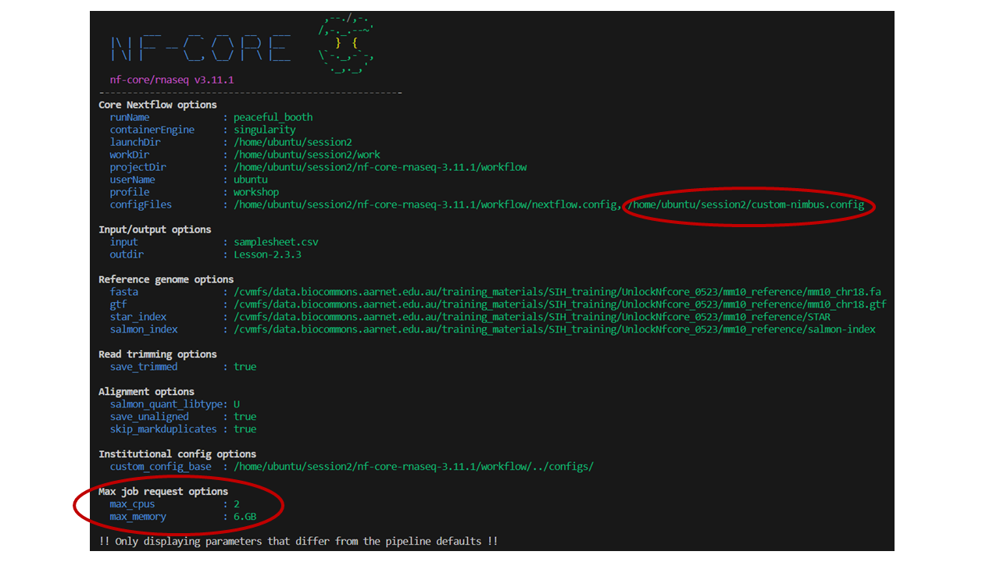

2.3. Configuring a run for your environment
- Learn how to check the default configurations that are applied to nf-core workflows
- Understand how to over-ride default configurations with custom configuration files
- Write a custom config file for your local environment and apply this configuration to your run
- Use an alternative container source for a workflow process
In the previous exercises, we have explored how to customise a run with workflow parameters on the command line or within a parameters file.
We will now look at configuration settings, which manage how the workflow is implemented on your system.
Nextflow’s portability is achieved by separating workflow implementation (input data, custom parameters, etc) from the configuration settings (tool access, compute resources, etc) required to execute it. This portability facilitates reproducibility: by applying the same parameters as a colleague, and adjusting configurations to suit your platform, you can achieve the same results on any machine with no requirement to edit the code.
2.3.1. Default nf-core configuration
Recall that when a main.nf file is run for any Nextflow workflow, Nextflow looks for configuration files in multiple locations to determine how to execute the workflow and its processes.
Currently, all nf-core workflows use a nextflow.config file and a conf/base.config file to define the default execution settings and parameters of a workflow.
The critical nf-core configuration aspects can be grouped into 3 key areas:
- Parameters
- Compute resources
- Software/tool access
Let’s take a look at these two configuration files to gain an undertsanding of how defaults are applied.
➤ Using the more command, take a few moments to scroll through both the nextflow.config and base.config files:
more nf-core-rnaseq-3.11.1/workflow/conf/base.config
more nf-core-rnaseq-3.11.1/workflow/nextflow.configThe base.config sets the default compute resource settings to be used by the processes in the nf-core workflow. It uses process labels to enable different sets of resources to be applied to groups of processes that require similar compute. These labels are specified within the main.nf file for a process. We can over-ride these default compute resources using a custom configuration file.
The nextflow.config file is more workflow-specific, and sets the defaults for the workflow parameters, as well as defines profiles to change the default software access from $PATH to the specified access method, eg Singularity. We can over-ride these parameters on the command line or with a parameters file, and over-ride the default behaviour of searching for tools on $PATH by specifying a -profile.
- Thinking of the resource configuration settings we have applied to our rnaseq runs so far (
-profile singularity,--max_cpus,--max_memory), if we were to run the nf-core/rnaseq workflow now without these custom configurations, do you think the run would complete successfully on our training VMs? - If not, why?
- The tools required by the different processes (eg STAR, salmon) would not be accessible, as they are not installed locally and saved to
$PATH(we have been accessing them via the ‘singularity’ profile and using the saved images from our$NXF_SINGULARITY_CACHEDIRdirectory - The first process to use more than 2 CPUs or 8 GB RAM would fail and cause the pipeline to exit with a fatal error; this is because nf-core pipelines check that the requested resources are available before attempting to execute a module.
The parameters --max_cpus, --max_memory and --max_time are applied as a cap for a workflow, to ensure that no single process attempts to use more resources than you have available on your platform. Setting these values to the maximum or near-maximum on your machine/node is an important customisation to prevent uneccessary failed runs.
Default settings for --max_cpus, --max_memory and --max_time are applied within the nf-core workflow nextflow.config - these are generous values expecting to be over-ridden with your custom settings.
Within base.config, the check_max() function over-rides the process resources if the custom ‘max’ setting is lower than the default setting for that process.

- What are the default settings for CPU, memory and walltime for the
STAR_ALIGNmodule? - How have these defaults been changed from our applied customisations in the previous runs?
To uncover these answers, we need to understand what process label has been assigned to the STAR_ALIGN module.
more workflow/modules/nf-core/star/align/main.nf
# or
grep label workflow/modules/nf-core/star/align/main.nf
# then
more nf-core-rnaseq-3.11.1/workflow/conf/base.configSTAR_ALIGN has the label process_high which has the settings 12 CPUs, 72 GB mem, 16 hrs walltime applied by the default base.config. We have previosuly applied --max_cpus 2 and --max_memory 6, so the check_max() function would have reduced the resources given to the STAR alignment process to 2 CPUs and 6 GB RAM, while retaining the default max walltime.
2.3.2. When to use a custom config file
As we have just observed, nf-core pipelines ship with default configurations for software access and compute resources. These may not be suited to running on your compute environment. In these circumstances, you may benefit from using a custom configuration file.
In our runs so far, we have avoided the use of custom configuration files by taking advantage of -profile singularity to access the required pipeline tools from singularity containers rather than from $PATH, and by taking advantage of the max parameters for CPU and memory.
These are basic configurations. What if:
- We wanted to increase the resources used above what is requested with process labels to take advantage of high CPU or high memory infrastructures?
- We wanted to run on a HPC with PBS Pro or SLURM job scheduling?
- We wanted to execute specific modules on specific node types on a cluster?
- We wanted to use an alternate tool?
- We wanted to customise outputs beyond what was possible with the nf-core workflow parameters?
These applications are where a custom configuration file is warranted.
By recording these configurations in a file, we can:
- Ensure that our pipeline runs efficiently and reproducibly on our compute environment
- Easily share the custom config file with others to run the workflow in the same computational environment
Bioinformatics relies on large-scale computational infrastructures and has a signficant carbon footprint due to the energy required to run computational workflows. We can optimise our worklfows to not only reduce their runtime, but also adopt more sustainable computing practices. This paper makes for an interesting read about the carbon footprint of bioinformatics workflows and tools!
2.3.3. Institutional config files
We can set these and other configurations within a custom configuration file that is specific to our institution; this is referred to as an institutional config.
There is a repository of institutional configs for nf-core pipelines. These have been contributed to by the community.
We have created an nf-core config for Pawsey’s Nimbus cloud: this (and other institutional configs) was downloaded along with the workflow code.
➤ View the available list of institutional configs we pulled down along with the workflow code:
ls nf-core-rnaseq-3.11.1/configs/conf➤ Let’s take a look at the Pawsey Nimbus config:
more nf-core-rnaseq-3.11.1/configs/conf/pawsey_nimbus.config- What arguments would we apply to our command line to utilise the pawsey_nimbus.config and set the right configurations for software and compute for our VMs?
💡 Hint: the Nimbus training VM ‘instance flavour’ is ‘c2r8’ ie 2 CPU and 8 GB RAM. See the Pawsey Nimbus nf-core config documentation for help.
-profile pawsey_nimbus,singularity,c2r8To select the institutional config, we apply -profile <config_basename>. To select the desired profiles from within that config, we further add the singularity and c2r8 profiles in a comma-delimited list.
In the event where your institution does not have a publicly availabe configuration file and/or you want to apply your own customisations, you will need to write your own config file.
💡 You can contribute to the nf-core community by sharing your config!
For the sake of the exercise, let’s assume there wasn’t a Pawsey Nimbus config publicly available, and write our own that is specific to our ‘c2r8’ VMs.
➤ Open a new file called custom-nimbus.config and start writing some Nextflow code by adding:
// Nimbus nf-core workshop configuration profile
profiles {
workshop {}
}Using the profiles scope in a configuration file groups attributes that belong to the same profile, in our case a profile we have chosen to name workshop.
➤ Inside this workflow profile, let’s remove the need for the -profile singularity flag from our run command by adding another scope called singularity:
Nextflow has a number of options for using Singularity that allow you to control how containers are executed. We are using:
enabledto use Singularity to manage containers automaticallyautoMountsto allow Nextflow to automatically mount host paths when a container is executedcacheDirto specify the directory Singularity images can be pulled from
// Nimbus nf-core workshop configuration profile
profiles {
workshop {
singularity {
enabled = true
autoMounts = true
cacheDir = "/home/ubuntu/singularity_cache"
}
}
}➤ Now let’s address those two resource parameters --max_memory 6.GB and --max_cpus 2. At the same level as the singularity {} scope, add a parameters scope and specify each parameter underneath:
☠️ Remember: when customising nf-core workflows, DO NOT ADD PARAMETERS to custom config files! The case of ‘max’ resource settings is a rare exception to this rule.

// Nimbus nf-core workshop configuration profile
profiles {
workshop {
singularity {
enabled = true
autoMounts = true
cacheDir = "/home/ubuntu/singularity_cache"
}
params {
max_cpus = 2
max_memory = '6.GB'
}
}
}➤ Add finally, add a profile description and set the cache behaviour to lenient:
Workflow execution is sometimes not resumed as expected. The default behaviour of Nextflow cache keys is to index the input files meta-data information. Reducing the cache stringency to ‘lenient’ means the files cache keys are based only on filesize and path, and can help to avoid unexpectedly re-running certain processes when -resume is in use.
// Nimbus nf-core workshop configuration profile
params {
config_profile_description = 'Pawsey Nimbus c2r8 profile'
}
process {
cache = 'lenient'
}
profiles {
workshop {
singularity {
enabled = true
autoMounts = true
cacheDir = "/home/ubuntu/singularity_cache"
}
params {
max_cpus = 2
max_memory = '6.GB'
}
}
}➤ Now re-run the pipeline, requesting the ‘workshop’ profile be applied from our custom-nimbus.config:
nextflow run nf-core-rnaseq-3.11.1/workflow/main.nf \
-profile workshop \
-c custom-nimbus.config \
-params-file workshop-params.yaml \
--outdir Lesson-2.3.3 \
-resume👀 We can see that our custom resource parameters have been applied

2.3.4. Custom resource configuration using process labels
Recall how our custom-nimbus.config restricted the CPU and memory usage by setting max_cpus and max_memory within the params scope of the profile. This can be a simple and effective method, however does not provide a lot of granularity.
For example, consider that you had access to a 16 core machine. If you appled max_cpus 16 to the nf-core rnaseq workflow, the STAR_ALIGN module would still only utilise 12 CPUs, as this module (as we learned in 2.3.1) has the label process_high which sets 12 CPUs. In this case, you would have up to 4 idle CPUs* while the STAR_ALIGN module completed for each sample.
* Nextflow will fill available resources as the input channels for processes are fulfilled. It will depend on the specific workflow and the requirements of the modules as to whether the resources can be filled. For ‘bottleneck’ steps like alignment, optimising the utilisation of available compute so that no resources are idle is critical to ensuring an efficient run.
To make the best use of our compute environment, we can write a custom configuration file that fine-tunes resources using process labels to assign the same resources to groups of processes sharing the same label, or ‘withName’ to target specific processes.
Note that the following exercise is trivial given the limitations of our VMs. Consider how this approach can be really powerful when working on a high performance cluster, where the process scope can be used to direct modules to execute on specific queues with the queue process directive and set precise compute requests tailored to the hardware on that queue. See Tips and tricks for an example HPC institutional config.
➤ Continue editing custom-nimbus.config, and set CPU and memory via process scope instead of params scope of the ‘workshop’ profile.
Set 2 CPUs and 6 GB memory for the process labels process_low, process_medium and process_high within the process scope
💡 Hint: View the file nf-core-rnaseq-3.11.1/workflow/conf/base.config for syntax example.
Replace the process scope with a params scope. Use withLabel:<label_name> syntax to set resources for each label.
// Nimbus nf-core workshop configuration profile
params {
config_profile_description = 'Pawsey Nimbus c2r8 profile'
}
process {
cache = 'lenient'
}
profiles {
workshop {
singularity {
enabled = true
autoMounts = true
cacheDir = "/home/ubuntu/singularity_cache"
}
process {
withLabel:process_low {
cpus = 2
memory = 6.GB
}
withLabel:process_medium {
cpus = 2
memory = 6.GB
}
withLabel:process_high {
cpus = 2
memory = 6.GB
}
}
}
}➤ Re-run the workflow with our custom configuration, setting outdir parameter to Lesson-2.3.4.
nextflow run nf-core-rnaseq-3.11.1/workflow/main.nf \
-profile workshop \
-c custom-nimbus.config \
-params-file workshop-params.yaml \
--outdir Lesson-2.3.4 \
-resume Recall that base.config is loaded by default by nf-core pipelines. Also recall the order of priority in which parameters and configurations are applied by nextflow. The settings we specify with -c custom-nimbus.config will over-ride those that appear in the default nf-core configurations workflow/conf/base.config and workflow/nextflow.config. Settings that are not over-ridden by -c <config> or any parameter from params file or provided on the command line will still be set to the defaults.
2.3.5. Custom resource configuration using process names
This exercise will demonstrate how to adjust the resource configurations for a specific process using the withName process selector, using the STAR_ALIGN module as example.
To provide customised resources that apply only to the STAR_ALIGN module, we need to ensure we have the right process name in our configuration file. Recall from Session 1 configuring nf-core workflows the following tips:
- The extended execution path is built from the workflow, subworkflow, and module names
- It can be tricky to evaluate the path used to execute a module. If you are unsure of how to build the path you can copy it from the
conf/modules.configfile
You can view the modules.conf file on Github or search your local copy:
grep withName nf-core-rnaseq-3.11.1/workflow/conf/modules.config | grep STARWhat extended execution path could we use to ensure our customisations were applied only to the STAR_ALIGN module?
Any of the following would be correct and specific:
'NFCORE_RNASEQ:RNASEQ:ALIGN_STAR:STAR_ALIGN'
'.*:RNASEQ:ALIGN_STAR:STAR_ALIGN'
'.*:ALIGN_STAR:STAR_ALIGN'➤ Continue editing custom-nimbus.config. Inside the process scope, add the ‘withName’ syntax and specify the execution path for the STAR_ALIGN module:
process {
withName: '.*:RNASEQ:ALIGN_STAR:STAR_ALIGN' {
}
} ➤ Then set CPU to 24 and memory to 96 GB:
process {
withName: '.*:RNASEQ:ALIGN_STAR:STAR_ALIGN' {
cpus = 24
memory = 96.GB
}
} // Nimbus nf-core workshop configuration profile
params {
config_profile_description = 'Pawsey Nimbus c2r8 profile'
}
process {
cache = 'lenient'
}
profiles {
workshop {
singularity {
enabled = true
autoMounts = true
cacheDir = "/home/ubuntu/singularity_cache"
}
process {
withLabel:process_low {
cpus = 2
memory = 6.GB
}
withLabel:process_medium {
cpus = 2
memory = 6.GB
}
withLabel:process_high {
cpus = 2
memory = 6.GB
}
withName: '.*:RNASEQ:ALIGN_STAR:STAR_ALIGN' {
cpus = 24
memory = 96.GB
}
}
}
}➤ Execute your run to output directory Lesson-2.3.5, once again applying your custom profile and config:
❓ What do you think will happen to this run?
nextflow run nf-core-rnaseq-3.11.1/workflow/main.nf \
-profile workshop \
-c custom-nimbus.config \
-params-file workshop-params.yaml \
--outdir Lesson-2.3.5 \
-resume If your execution path for the STAR_ALIGN process was specified correctly, your run should have died with the following error:

What do you expect would happen to your run if your execution path was not specified correctly?
In this case, our pipeline would complete OK, because the resources for the STAR_ALIGN process have been appropriately set for our VM using the ‘process_high’ label within our custom-nimbus.config.
The configurations set within that ‘withName’ process scope would not function, and a warning would be printed, eg
WARN: There's no process matching config selector: .*:RNASEQ:ALIGN_STAR:STARALIGN2.3.6. Specify a custom container
Note that for deploying nf-core workflows, it is not recommended to replace the tools within the workflow, as this will decrease portability and reproducibilty! This exercise is to demonstrate how you can specify containers, as this may aid you in developing and testing your own Nextflow workflows
For this example, we are going to test out the latest version of Trim Galore. We have been using the default version of Trim Galore that is executed with nf-core/rnaseq revision 3.11.1.
We can easily view the versions of all tools used from the software_versions.yml file created by default in the <outdir>/pipeline_info directory by nf-core workflows OR by viewing the same information from the ‘nf-core/rnaseq Software Versions’ section of the MultiQC html report.
➤ Identify the version of Trim Galore that has been used in our runs so far from the software_versions.yml file.
You might view the file by opening it from the VS Code explorer pane, using more command, or grep for the tool name.
more Lesson-2.3.4/pipeline_info/software_versions.yml
##
#TRIMGALORE:
# cutadapt: '3.4'
# trimgalore: 0.6.7
#The process names are listed in alphabetical order, with the tools and versions used in the script section of the process listed below the process name. We can see for TRIMGALORE process that version 0.6.7 of Trim Galore was used.
There is a newer version of Trim Galore available, version 0.6.10. Recall that we have been accessing some materials on CernVM-FS, a read-only filesystem which provides shared access to common bioinformatics reference datasets as well as Singularity containers of everything stored in Biocontainers.
CernVM-FS comes pre-mounted on Pawsey Nimbus VMs using the Pawsey Bio - Ubuntu 22.04 - 2023-03 image, so we can access and apply the Trim Galore biocontainer by specifying the path to this remote image within the process scope of a custom config, using the ‘withName’ process selector.
❓ For maintaining best practice, where is the best place for the container definition?
Within the custom-nimbus.config institutional config file
Within a separate custom config file named eg custom-tools.config
Why do you think this?
Remember, Nextflow’s portability is achieved by separating workflow implementation from the configuration settings required to execute it. In the event that we are testing a different tool version, this should not be placed within the institutional config that is shareable with others using the same infrastructure. Swapping out tool versions is a bespoke adaptation of the nf-core workflow that could harm reproducibility if it was inadvertently executed. By placing it within a clearly named custom config file, there is less chance of unwittingly executing a workflow that does not match the expected utilisation of tools.
➤ First, identify the container for the 0.6.10 version of Trim Galore:
Containers are mounted at the path /cvmfs/singularity.galaxyproject.org, with sub-directories based on the first 2 letters of the tool name, eg /cvmfs/singularity.galaxyproject.org/t/r/ for Trim Galore containers.
ls /cvmfs/singularity.galaxyproject.org/t/r/trim*
##
# /cvmfs/singularity.galaxyproject.org/t/r/trim-galore:0.6.10--hdfd78af_0
##➤ Next, identify the execution path for the TRIM_GALORE module:
grep -i galore nf-core-rnaseq-3.11.1/workflow/conf/modules.config
##
# if (params.trimmer == 'trimgalore') {
# withName: '.*:FASTQ_FASTQC_UMITOOLS_TRIMGALORE:FASTQC' {
# if (params.trimmer == 'trimgalore') {
# withName: '.*:FASTQ_FASTQC_UMITOOLS_TRIMGALORE:TRIMGALORE' {
# params.extra_trimgalore_args ? params.extra_trimgalore_args.split("\\s(?=--)") : ''
##➤ Open a file for editing named custom-tools.config, and start building your config with the process scope and ‘withName’ selector:
process {
withName: {
}
}➤ Then copy the Trim Galore module execution path:
process {
withName: '.*:FASTQ_FASTQC_UMITOOLS_TRIMGALORE:TRIMGALORE' {
}
}➤ Finally, copy the container details:
process {
withName: '.*:FASTQ_FASTQC_UMITOOLS_TRIMGALORE:TRIMGALORE' {
container = '/cvmfs/singularity.galaxyproject.org/t/r/trim-galore:0.6.10--hdfd78af_0'
}
}➤ Delete or comment out the ‘withName’ content we applied to the STAR_ALIGN process in the custom-nimbus.config file, then execute the run to outpu directory Lesson-2.3.6 making sure to add the custom-tools.config:
nextflow run nf-core-rnaseq-3.11.1/workflow/main.nf \
-profile workshop \
-c custom-nimbus.config,custom-tools.config \
-params-file workshop-params.yaml \
--outdir Lesson-2.3.6 \
-resume ➤ After your run has completed, check that the updated version of Trim Galore has been used:
grep -i galore Lesson-2.3.6/pipeline_info/software_versions.yml
##
#TRIMGALORE:
# trimgalore: 0.6.10
##- nf-core workflows work ‘out of the box’ but there are compute and software configurations we should customise for our runs to work well on our compute infrastructure
- nf-core executes by default with
workflow/nextflow.configandworkflow/conf/base.configand has a repository of community-contributed institutional configs that ship with the workflow - custom configs can be applied to a run with
-c <config_name>, and will over-ride settings in the default configs - customisations can be targeted to specific processes with ‘withLabel’ or ‘withName’
- workflow parameters belong in
-params-file <params_file>and not-c <custom_config>_
All materials copyright Sydney Informatics Hub, University of Sydney